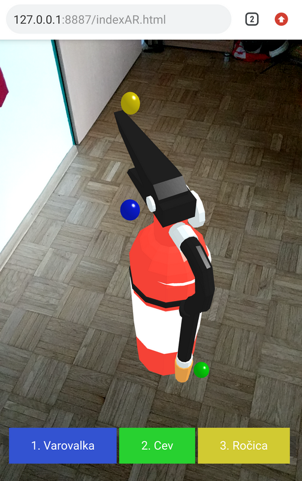

Gasilni aparat v WebXR
Gasilni aparat dostopen na:
https://pjevic.com/test/
Potretno je namestit Chrome Canary/Dev ver 70-72:
Chrome
Vklopit WebXR znački pod chrome://flags in sicer
webxr
ter
webxr-hit-test
.
Zbirna Mesta navigacija:
here
